FluffyPuppyKasey
Hi there! My name's Kasey! I do all sorts of things, from video editing, to photography, to general tinkering with tech, programming (I wrote this site!), 3D modeling/rendering/animation (made the background too!), and everything in between!
You could say I'm a jack of all trades, master of none.
I tend to be on Twitter most often, but here's some other places I'm on!Twitter
Patreon
Ko-Fi
Telegram